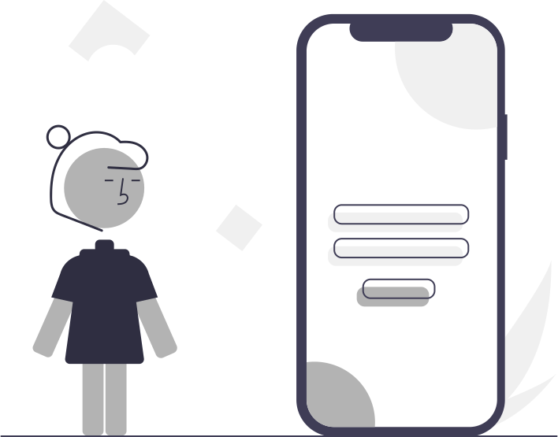

{{ hino.autor }}favoritar
procure pelo número, título ou letra do hino.
palavras chaves{{ keyword.name }}apagar

adicione um novo filtro com palavras chaves, títulos ou frases do hino.
{{ hino.numero + ' ∙ ' + hino.titulo }}{{hino.autor}}Fonte{{ hinosStorage.formatacao.fonte }}{{ font.title }}Novo CânticoNegritoItálicoTamanho da Fonte{{ hinosStorage.formatacao.tamanhoFonte }}pxCor da Fonte